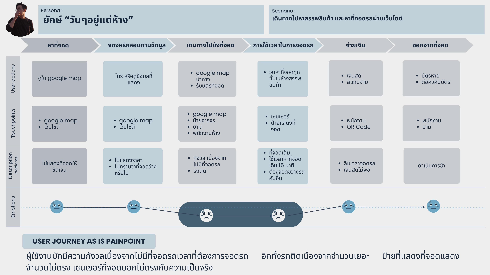
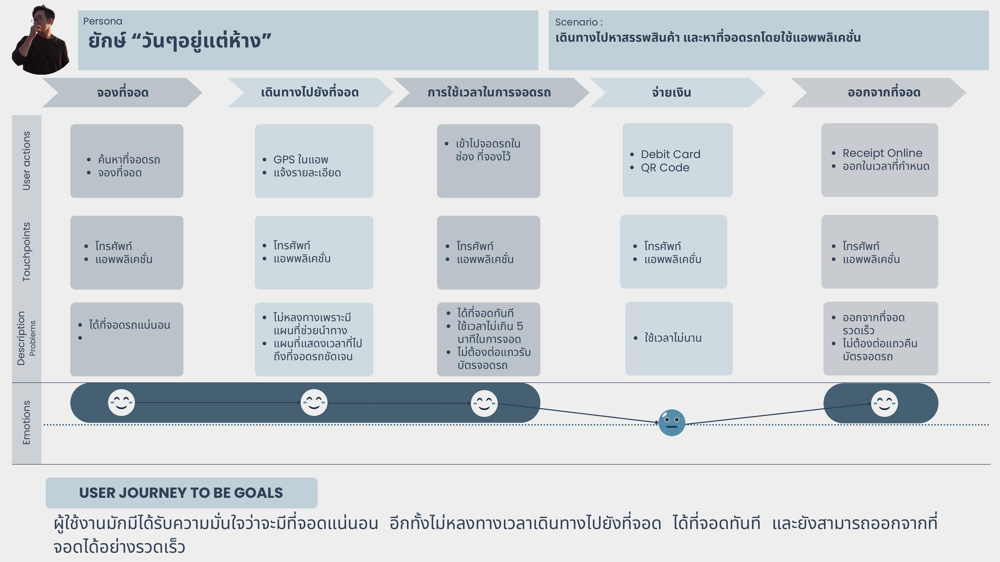
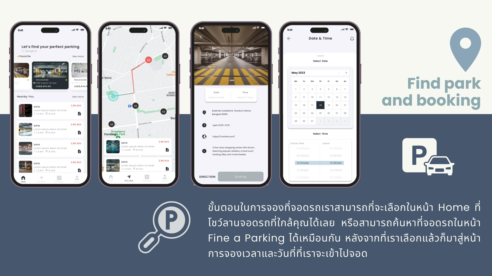
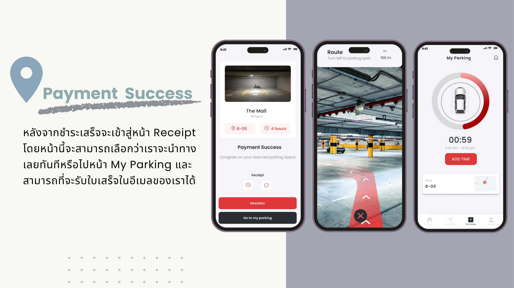

Easy Parking · UX/UI Case Study
Easy Parking — Book Before You Park
A parking-reservation app concept for drivers in Bangkok, built from real user research — a mobile app that lets you search, book, pay for, and navigate straight to an open spot, before you ever start circling the lot.
A self-directed case study — a concept explored end to end from user research through UI, not a commissioned or shipped product.
01 — Overview
Parking is easy to overlook — until you're circling the block
Drivers around Bangkok deal with a familiar problem: no easy way to know where parking is actually free, and no single flow for paying — some lots run on cash, some on a top-up card, some on QR. This project set out to design a mobile app that solves both at once: reserve a real spot before you leave, then pay however suits you, all from one screen.
02 — Research
Grounded in 33 survey responses and 5 follow-up interviews
A quantitative survey (33 respondents who own a car and use it regularly — 60.6% of them aged 20–30) framed the problem, then 5 follow-up interviews dug into the why: what they search for, how long parking takes, what goes wrong, and how they'd rather pay. A few findings shaped the entire design direction:
100%
Pick convenience over looks
Every respondent said ease of use matters more than a pretty interface — so speed and clarity were prioritized over decoration.
78.8%
Log in before doing anything
Most respondents would rather sign in first than browse as a guest — they want the app to remember their details for next time and unlock every feature right away.
78.8%
Prefer scanning a QR to pay
Most respondents pay by scanning a QR rather than entering a credit card — worried about card data leaking and finding QR simply faster.
95.5%
Drive their own car to the mall
Nearly every interviewee drives to shopping malls on days off and wants parking sorted fast, without losing time they'd rather spend shopping.
03 — Voice of the User
Real complaints pulled straight from drivers online
“
In my neighborhood soi, everyone just ends up parking along the street — it's packed.
“
Anyone else feel this way? Why is parking getting harder to find every single day?
“
If I want a mall on the weekend, I have to leave by 11am or it's basically full — any later than that and it's not even worth going.
“
After 8pm I can barely find anywhere near work anymore. Some days I end up parking two buildings down and walking over, or leaving my bike out front instead.
04 — Persona
The person this app had to work for
Office Worker · "Lives at the mall"
"Yak" · 25 years old
Demographic
A general-office employee, male, lives in Samut Sakhon and commutes into Bangkok for work.
Behavior
Not a morning person. Drives everywhere rather than taking public transport, navigates confidently, and spends most days off walking malls or watching movies, taking his time browsing — impatient, and doesn't like to wait. Pays by card or by scanning to pay.
Needs & goals
Wants a parking spot that's genuinely convenient, doesn't want to waste time hunting for one, wants payment to be quick and easy, wants a fast search, and wants to leave the lot without waiting to return a ticket.
05 — Empathy Map
Stepping into Yak's shoes on a mall run
Scenario: driving out to find a shopping mall — and a parking spot — while checking a website along the way.
Hear
- Car horns
- A loudspeaker calling out a license plate
- Radio playing in the car
Think & feel
- Afraid of forgetting where he parked
- Afraid there won't be a spot at all
- Just wants to get inside and start shopping
See
- Signs showing how many spots are left
- Cars queued, all hunting for the same spot
- People pushing carts across empty bays to save them
Say & do
- Takes the entry ticket from the machine
- Asks security if there's still space left
- Queues to scan out and pay on the way out
Pain
- The lot is already full
- Time wasted just searching for a spot
- Prices aren't shown up front
Gain
- Finds a spot quickly
- Can reserve a spot with a set entry and exit time
- Has an in-app map to navigate straight there
06 — User Journey
From anxious guesswork to a confident, booked spot
Mapping the existing routine surfaced real anxiety at every step — not knowing if a spot exists, circling in traffic, losing time once parked. The proposed flow removes the guesswork by reserving the spot, the route, and the time slot before Yak ever leaves the house.


07 — Design Process
A standard double-diamond, run start to finish
01
Empathize
Research & hypothesis, user interviews.
02
Define
User persona, empathy map, user journey.
03
Ideate
User flow and a project-specific design system.
04
Prototype
Wireframe through to high-fidelity UI.
08 — Product Walkthrough
Search, book, pay, and track — in four short steps

Yak finds a nearby spot from the home feed or the map, checks it against a route, and reserves a date and time before setting off.
Paying the way the research said people already pay
QR PromptPay sits at the top of the list rather than behind a card form, so the majority who never want to type card details can pay in a single tap — while saved cards stay available for the people who prefer them.
- Payment methods lead with QR PromptPay, then saved cards
- Adding a card is a short form asked for only once
- The QR code carries the amount and an expiry, ready for any bank app

After paying, an AR-guided route walks the driver straight to the reserved bay, and a live countdown on the "My Parking" tab makes it easy to add time or leave before it expires.
Cancelling is just as considered: cancel more than 15 minutes before the booked time for a full refund, or the system auto-cancels and refunds 80% if the driver never shows.
09 — Design System
Color, type, and the core components
Aa Bb 123
Typography — Poppins. H1/Medium 36px for headings down to a 14px regular body, plus a matching icon set, calendar, and button/fill states for every component.
10 — What This Would Achieve
Designed to remove the anxiety of finding parking
01
A guaranteed spot, booked ahead
Reserving before leaving home removes the single biggest source of anxiety the research surfaced.
02
No more wrong turns
In-app GPS and an AR-guided walk from the car mean drivers reach their exact spot without circling or backtracking.
03
Quick in, quick out
A pre-booked bay and a digital receipt mean no queueing to collect or return a physical parking ticket.
Interested in working together?
Open to UX/UI work that starts from real research — from survey design through to a shippable interface. Feel free to reach out.